sistar company - *sc - sistar crm
CUSTOMER RELATIONSHIP MANAGEMENT
SISTAR CRM
The art and science of customer relationship management: building lasting relationships through strategic interaction management and data-driven insights.

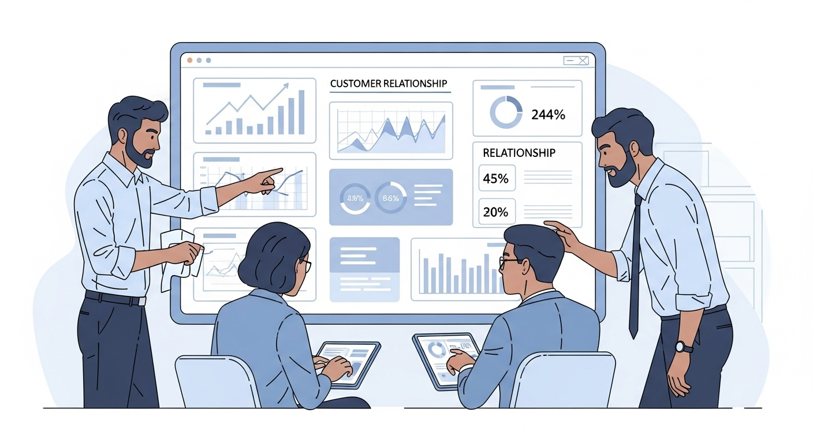
FOUNDATION
Not Just Software — A Business Strategy
SISTAR CRM is more than a technology tool. It is a comprehensive business philosophy built on understanding, anticipating, and meeting customer needs at every touchpoint — from first contact to long-term advocacy.
By embedding customer-centricity into product development, marketing, sales, and post-purchase support, SISTAR CRM turns isolated interactions into a unified, continuous relationship. The result is clear: happier, more loyal customers who stay longer, driving sustainable revenue growth and lasting competitive advantage.
The CRM Promise
- Put customers at the center of every business decision
- Turn data into meaningful, personalized experiences
- Drive loyalty, retention, and sustainable growth
- Unify teams around a single customer view
CORE CONCEPTS
The Five Pillars of SISTAR CRM
Effective CRM rests on five interconnected disciplines that together create a customer experience worth returning to.
Customer Understanding
Gain deep insight into behaviors, preferences, and needs through every interaction and data signal.
Customer Focus
Put customer needs at the center of every decision, from product roadmaps to service policies.
Leveraging Data
Turn consolidated customer information into actionable insights and personalized touchpoints at scale.
Optimized Processes
Streamline workflows and remove friction for faster, more consistent customer experiences.
Cross-Functional Teamwork
Align sales, marketing, and support to deliver a unified customer experience at every stage.
KEY FEATURES
SISTAR CRM Systems: What Powers the Platform
Unified Customer Information
Consolidate contact history, purchase records, preferences, and support interactions into one complete profile, accessible across the entire organization.
Integrated Sales & Marketing Tools
Streamline lead management, track pipeline progress in real time, and automate marketing campaigns so no opportunity falls through the cracks.
Efficient Customer Support
Manage inquiries and support tickets with speed and precision, delivering personalized responses that resolve issues quickly and build trust.
SYSTEM ARCHITECTURE
Three Types of SISTAR CRM Systems
SISTAR CRM is built on three complementary system types, each serving a distinct organizational function. Together, they form a complete CRM ecosystem.
Operational CRM
Automates day-to-day tasks across sales, marketing, and customer service. By streamlining repetitive interactions and workflows, it frees teams to focus on high-value work that requires human judgment and creativity.
Analytical CRM
Digs into customer data to uncover behavioral trends, predict future purchases, and surface strategic insights that inform product development, pricing, and go-to-market decisions.
Collaborative CRM
Breaks down silos between departments and external partners by enabling seamless information sharing. Every team works from the same customer intelligence, delivering consistent, coordinated experiences at every touchpoint.
BUSINESS IMPACT
Benefits of Effective SISTAR CRM
Strategically implemented, SISTAR CRM delivers measurable impact across every dimension of business performance, from customer satisfaction to bottom-line revenue.
Enhanced Customer Retention
Personalized, timely interactions make customers feel known and valued.
Increased Sales Revenue
Streamlined pipelines and smart lead prioritization accelerate growth.
Improved Satisfaction
Consistent, high-quality service across every channel and department.
Greater Operational Efficiency
Intelligent automation removes repetitive manual tasks.
Better Strategic Decisions
Real-time, data-driven insights and predictive analytics guide action.
Customer Lifecycle at a Glance
SISTAR CRM maps every stage of the customer journey, from first awareness through purchase to long-term advocacy, so no moment in the relationship goes unmanaged or unmeasured.
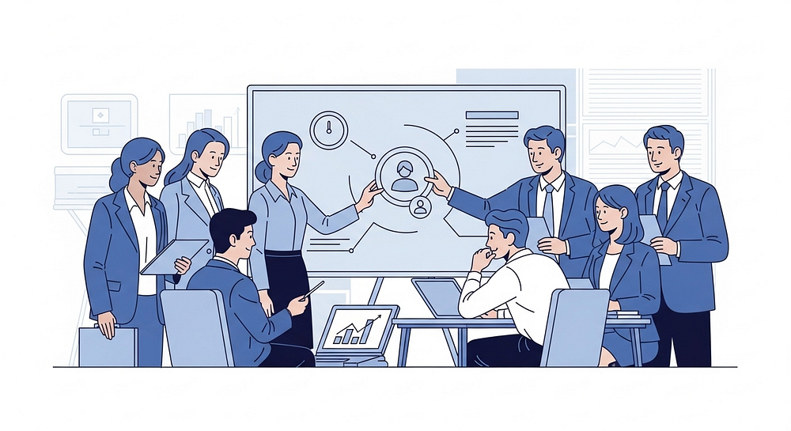
CHAPTER 2 • SALES STRATEGY
Inbound vs. Outbound Sales Strategies
Both strategies play a vital role in a balanced sales pipeline. Inbound builds authority and attracts high-intent buyers over time, while outbound accelerates pipeline velocity and expands market reach. SISTAR CRM lets teams run both motions from a single platform.
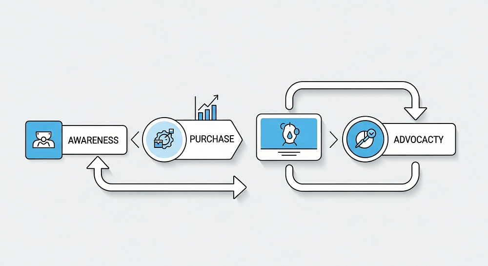
SELLING METHODOLOGY
Value-Based & Consultative Selling
Value-Based Selling
Instead of leading with product features or technical specifications, value-based selling shows customers the tangible outcomes they can expect. This approach ties the conversation to what buyers care about most: ROI, efficiency, and competitive advantage.
Consultative Selling
The consultative approach positions the salesperson as a trusted advisor rather than a vendor. By listening closely to customer challenges and goals, the rep tailors solutions to each situation. This builds credibility, reduces sales friction, and lays the foundation for long-term partnerships rather than one-time transactions.
Both approaches focus on what the customer needs, not just what the product offers. This builds trust and drives higher close rates.
SALES METHODOLOGY
Solution & Account-Based Selling
These two methodologies work together within the SISTAR CRM framework, targeting different segments of your pipeline with precision and personalization.
Discover Customer Problems
Solution selling starts with rigorous discovery, identifying the specific pain points, operational challenges, and strategic gaps a customer faces. SISTAR CRM's data layer surfaces these insights before the first conversation.
Provide Tailored Solutions
Once the problem is clearly defined, solution selling delivers recommendations designed for that exact situation. These are targeted value propositions backed by data and industry context, not generic pitches.
Engage Key Accounts Strategically
Account-based selling (ABS) concentrates resources on high-value target accounts through deeply personalized, one-on-one engagement. SISTAR CRM gives account teams the visibility and coordination to orchestrate multi-stakeholder campaigns.
ADVANCED TECHNIQUES
SPIN & Social Selling Techniques
SPIN Selling
SPIN is a structured questioning framework that guides sales conversations through four stages: Situation (understand the current state), Problem (identify pain points), Implication (explore the consequences of inaction), and Need-Payoff (articulate the value of solving the problem). By fully understanding customer needs before presenting any solution, reps improve conversion quality and customer satisfaction.
Social Selling
Social selling uses professional networks and social media to build relationships before a formal sales conversation begins. By sharing relevant content, engaging authentically in industry discussions, and demonstrating expertise, sales professionals earn the trust that makes buyers receptive. SISTAR CRM brings social signals directly into contact records, giving teams a complete view of each prospect's engagement.
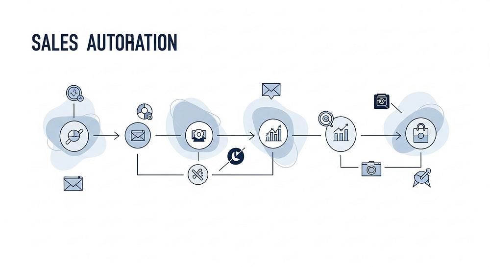
PIPELINE MANAGEMENT
Essential Sales Pipeline Strategies
Plan Your Sales Process
Define a clear, documented process for how prospects move through each pipeline stage, from first contact to closed deal. A consistent process produces consistent results.
Rank Your Leads
Use SISTAR CRM's scoring tools to identify and prioritize the leads most likely to convert. Focus your team's effort where it delivers the highest return and the shortest time-to-close.
Launch Referral Programs
Turn your happiest customers into growth engines. Structured referral programs use authentic advocacy to expand your pipeline organically, at a fraction of the cost of paid acquisition.
PERFORMANCE OPTIMIZATION
Improve Sales with Data-Driven Decisions
Analyze Past Performance
SISTAR CRM's reporting engine surfaces historical win/loss data, pipeline velocity, and rep-level performance trends. Use these insights to see what's working, where deals stall, and which customer segments respond best to each approach.
Invest in Team Training
Equip your sales team to interpret CRM data and turn it into smarter selling decisions. Adoption is what unlocks the value of a CRM, so ongoing training ensures your team gets the most from every feature and data point.
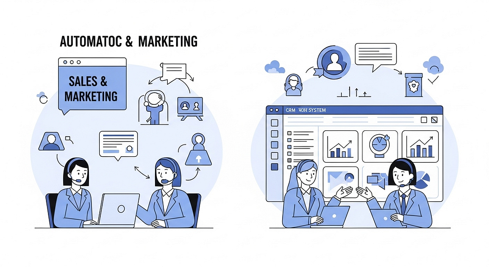
CUSTOMER EXPERIENCE
Personalization & Consistent Follow-Up
The difference between a forgettable vendor and a trusted partner often comes down to two disciplines: personalization and follow-through. SISTAR CRM makes both systematic and scalable.
Personalized Experience
Craft a unique approach for each customer using SISTAR CRM's rich data layer, including purchase history, stated preferences, behavioral signals, and past interactions. Personalization shows customers that you see them as individuals, not just revenue. Tailored messaging, relevant offers, and context-aware conversations drive measurably higher engagement and conversion across every channel.
Consistent Follow-Up
Disciplined, regular contact throughout the sales cycle builds the trust that separates won deals from lost ones. SISTAR CRM's task management and automated reminders ensure no follow-up falls through the cracks, keeping your team engaged with every prospect at the right moment in their buying journey.
These actions show customers that you value them as people, not just transactions. That distinction builds loyalty that lasts.
CHAPTER 3 • IMPLEMENTATION
SISTAR CRM Implementation Strategy
A successful CRM implementation is a disciplined, phased journey. SISTAR CRM's framework guides your organization through every critical stage, from setting objectives to continuous optimization.
Four Phases of Successful Implementation
Define Objectives
Set clear, measurable goals
Consolidate Data
Unify all customer information
Team Adoption
Train teams for consistent use
Monitor & Optimize
Track metrics and improve
Each phase builds on the last. Organizations that skip steps, particularly data consolidation or team training, consistently underperform in CRM ROI compared to those who follow a structured rollout.
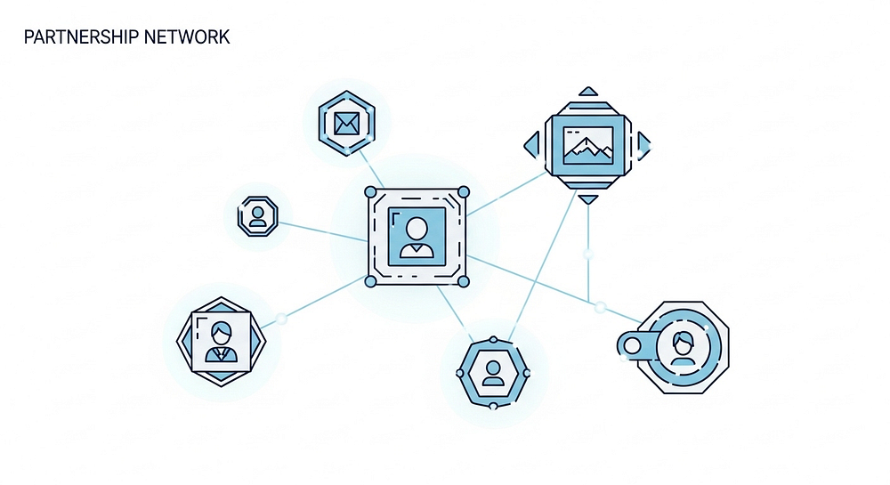
ACTION STEPS
Practical SISTAR CRM Action Steps
Gather Stakeholder Input
Engage sales, marketing, and support teams early. Learn their workflows, pain points, and expectations before configuring the system. Buy-in starts with inclusion.
Automate Key Processes
Identify repetitive, time-consuming tasks such as lead assignment, follow-up reminders, and status updates. Configure SISTAR CRM to handle them automatically, freeing teams for higher-value work.
Integrate With Other Tools
Connect SISTAR CRM with your email platform, accounting software, marketing automation, and website analytics. A unified data flow eliminates manual entry and gives every team a single source of truth.
CRM is not a one-time setup. Establish a regular review cadence, quarterly at minimum, to assess performance, refine workflows, and unlock new capabilities as your business evolves.
CHAPTER 4 • RETENTION
The Key to Customer Retention
Keeping an existing customer costs five to seven times less than winning a new one, yet most organizations overinvest in acquisition and underinvest in retention. SISTAR CRM reverses that imbalance, giving teams the intelligence and tools to proactively protect and grow their existing customer base.
RETENTION STRATEGIES
Four Strategies to Prevent Customer Churn
Find Out Why Customers Leave
Use exit surveys and churn analytics to uncover root causes. SISTAR CRM flags at-risk accounts early, based on engagement drop-off, support ticket volume, and usage patterns.
Act Early, Don't Wait
Set up automated alerts and health-score triggers in SISTAR CRM so customer success teams can step in at the first sign of disengagement.
Connect and Teach
Onboarding programs, knowledge bases, and training webinars build confidence. SISTAR CRM tracks educational engagement to spot customers who need support.
Deliver Great Service & Reward Loyalty
Loyalty programs and personalized milestones make customers feel valued. SISTAR CRM triggers rewards automatically at key relationship moments.
Unified Customer Profiles: Know Every Customer
At the heart of SISTAR CRM is a unified customer profile that brings every interaction, transaction, preference, and support record into one accessible view. Sales, marketing, and support teams work from the same intelligence, which removes blind spots, reduces friction, and enables personalized engagement at scale.
360° Contact View
Link every call, email, meeting, purchase, and support ticket to a single contact record for complete relationship visibility.
Behavioral Signals
Website visits, email opens, content downloads, and product usage feed directly into each profile for real-time intent scoring.
Cross-Team Access
Sales, marketing, and support share one authoritative record, eliminating duplicate data and ensuring every interaction is informed by full context.
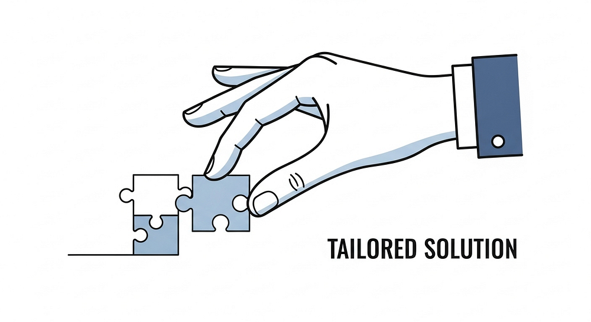
PLATFORM OVERVIEW
SISTAR CRM Dashboard Intelligence
Real-Time Business Visibility
SISTAR CRM's command-center dashboard gives you a live view of your entire commercial operation. Pipeline health, team performance, campaign results, and customer satisfaction metrics appear in one configurable interface, so leaders can make fast, confident decisions.
Customizable for Every Role
Sales managers track pipeline conversion and quota attainment. Marketing teams monitor lead quality and campaign ROI. Customer success managers watch health scores and renewal risk. Each role gets a tailored view that surfaces the metrics that matter most to their daily priorities.
INTEGRATION ECOSYSTEM
SISTAR CRM Connects Your Entire Tech Stack
Email & Calendar
Sync with Gmail, Outlook, and calendar platforms to log every communication automatically and schedule follow-ups without leaving the CRM.
Accounting & Finance
Connect ERP and accounting systems to link deal values, invoice status, and payment history directly to customer records.
Marketing Automation
Integrate with marketing platforms to align nurturing sequences with CRM pipeline stages for seamless handoffs between marketing and sales.
Website & Analytics
Pull web behavior data, including page visits, form submissions, and content engagement, into contact records for richer intent signals.
AUTOMATION
Workflow Automation That Scales With You
Manual processes slow growth. SISTAR CRM's automation engine removes the repetitive tasks that hold teams back, from lead assignment and follow-up scheduling to contract generation and onboarding. As your business grows, your workflows grow with it, keeping quality consistent without adding headcount.
Lead Routing
Automatically assign inbound leads to the right rep by territory, industry, deal size, or any custom rule.
Follow-Up Triggers
Set time-based or behavior-based triggers that prompt reps to follow up at the optimal moment in the buying journey.
Onboarding Sequences
Automate welcome flows, product tutorials, and check-in touchpoints to speed time-to-value and reduce churn risk.
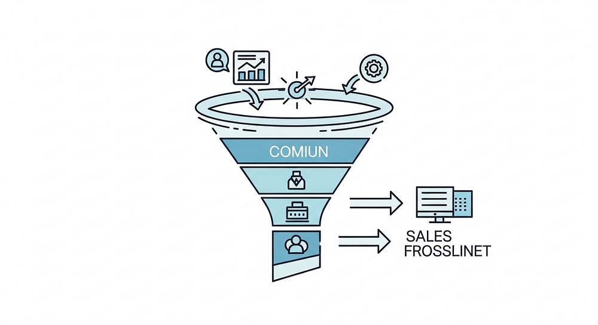
ANALYTICS & INSIGHTS
Turn Customer Data Into Competitive Advantage
What SISTAR Analytics Tracks
- Pipeline velocity and stage conversion rates
- Customer lifetime value and churn probability
- Rep performance and quota attainment
- Campaign attribution and lead source quality
- Support ticket resolution times and CSAT scores
- Renewal risk and upsell opportunity signals
SISTAR CRM's analytics layer turns raw customer interactions into strategic intelligence. Leaders see what is actually happening across their customer base and can act on it with confidence, rather than relying on assumptions.
COMMERCIAL PIPELINE
Managing the Commercial Pipeline End-to-End
A healthy pipeline is the lifeblood of any commercial organization. SISTAR CRM gives you complete visibility and control across every stage, from first touch to closed revenue, so no deal stalls, slips, or disappears without action.
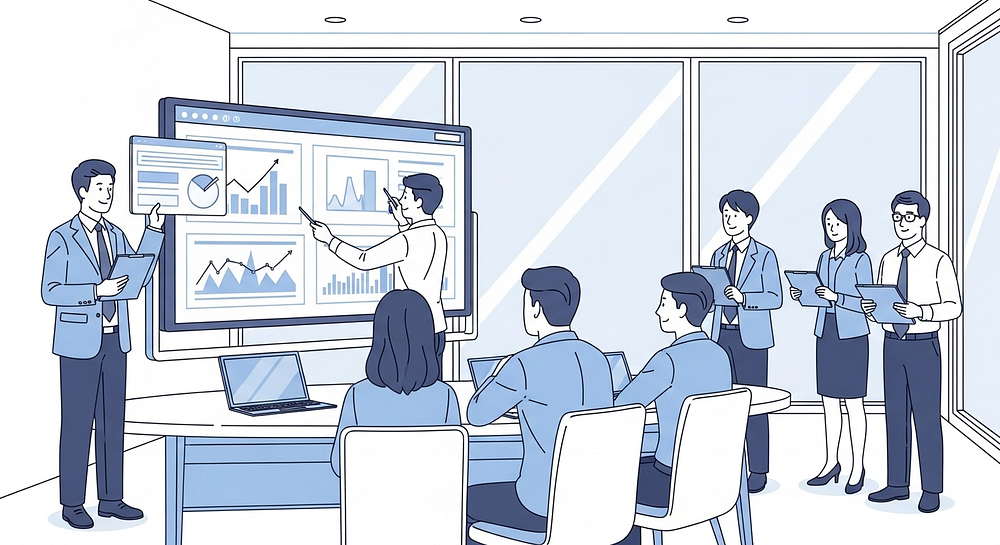
TEAM COLLABORATION
Breaking Silos: Cross-Functional CRM Adoption
A CRM delivers little value if only one team uses it. SISTAR CRM is built for organization-wide adoption, with role-specific interfaces, shared data models, and collaborative workflows that connect sales, marketing, support, and operations around a single customer view.
Sales Teams
Manage pipelines, track contacts, log activities, and forecast revenue in one place.
Marketing Teams
Run campaigns, score leads, report on attribution, and segment audiences, all tied directly to pipeline outcomes.
Support Teams
Manage tickets, monitor customer health, route escalations, and track CSAT against the full customer history.
Leadership
Access executive dashboards, revenue forecasts, cross-functional KPIs, and planning tools built on real-time data.
QUBIT ERP INTEGRATION
SISTAR CRM Within the Qubit ERP Ecosystem
SISTAR CRM is a core component of the broader Qubit ERP platform, designed to run seamlessly within an integrated business management environment. When CRM data flows bidirectionally with ERP modules for inventory, finance, procurement, and HR, the organization operates with greater coherence and speed.
Customer orders placed in the CRM automatically trigger fulfillment workflows in ERP. Financial data from ERP informs the credit limits and pricing rules that sales reps see in real time. Support teams view delivery status and billing history alongside customer profiles, eliminating the need to switch systems or rely on outdated, manually updated spreadsheets.
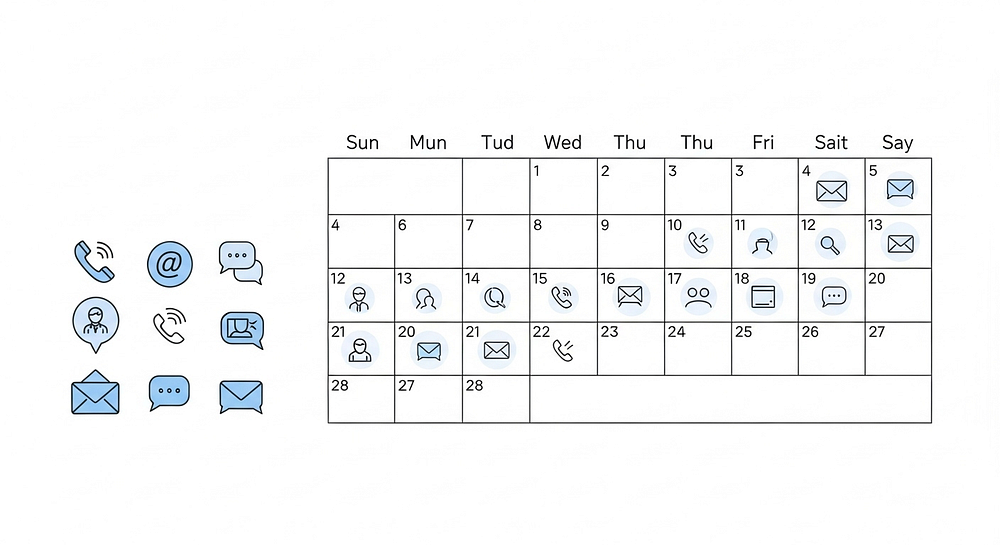
SUCCESS METRICS
Measuring CRM Success: Key Performance Indicators
Customer Retention Rate
Track the share of customers who stay with your business over a set period. It is the most direct measure of CRM effectiveness and relationship quality.
Pipeline Conversion Rate
Measure how well your team converts qualified leads into paying customers at each stage, revealing where the biggest gains are possible.
Customer Satisfaction Score
CSAT and NPS scores captured in SISTAR CRM gauge relationship health and act as leading indicators of renewal risk and expansion potential.
Customer Lifetime Value
CLV captures the total revenue a customer generates over the full relationship, making it the ultimate measure of CRM-driven business impact and long-term ROI.
SUMMARY
The SISTAR CRM Advantage: A Strategic Recap
Unified Data
One accurate, complete customer record that powers every team across the organization.
Intelligent Automation
Automate repetitive tasks so teams can focus on relationships, strategy, and high-value work.
Actionable Analytics
Real-time insights that reveal what is working, what is at risk, and where to invest next.
End-to-End Pipeline
Full commercial pipeline visibility, from first lead to renewed contract and beyond.
ERP Integration
Connect seamlessly to Qubit ERP for a unified, enterprise-grade business management platform.
Start Your SISTAR CRM Journey
SISTAR CRM is more than a platform. It is the foundation for every meaningful customer relationship your organization will build. Whether you are modernizing a legacy sales process, scaling a growing team, or transforming your entire go-to-market approach, SISTAR CRM within the Qubit ERP ecosystem gives you the tools, intelligence, and integration to do it with confidence.
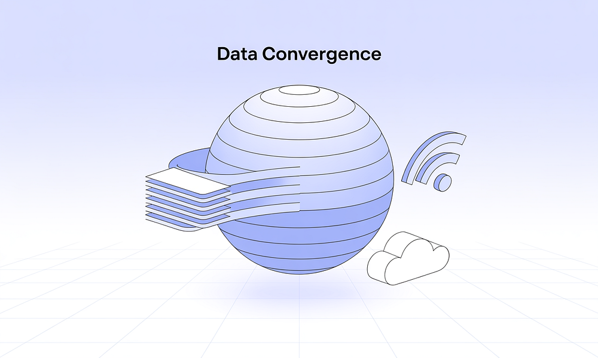